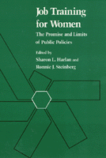

A comprehensive review of the public system of occupational education and job training for women in the U.S.
A comprehensive review of the public system of occupational education and job training for women in the U.S.


 A comprehensive review of the public system of occupational education and job training for women in the U.S.
A comprehensive review of the public system of occupational education and job training for women in the U.S.

|  |
Job Training For WomenThe Promise and Limits of Public Policiesedited by Sharon L. Harlan and Ronnie J. Steinbergpaper EAN: 978-0-87722-762-5 (ISBN: 0-87722-762-4) |
"A gold mine of comprehensive information about government-sponsored vocational job training for women, authored by experts."
—Choice
This comprehensive review of the public system of occupational education and job training for women in the United States is the first book of its kind. Placing the treatment of women in an historical and political context, these original essays focus on education and training for occupations that require less than a four-year college degree. These include clerical, service, and blue-collar occupations where the overwhelming majority of today’s working women earn their living. The contributors examine the major public training programs that are aimed at people who are entering the labor market for the first time as well as those offered to workers of all ages who need employment assistance.
1. Job Training for Women: The Problem in a Policy Context – Sharon L. Harlan and Ronnie J. Steinberg
Part I: Federal Training Initiatives – Sharon L. Harlan
2. Women and Federal Job Training Policy – Sharon L. Harlan
3. The Vocational Education Option for Women – Louise Vetter
4. Job Training Opportunities for Women in the U.S. Armed Forces – M.C. Devilbiss
Part II: Targeted Groups and Program Experiences – Sharon L. Harlan
5. Displaced Homemakers in the Employment and Training System – Jill Miller
6. Employment Services for Teenage Mothers – Denise F. Polit
7. Women and Public Service Employment: A Case Study in Connecticut – Elizabeth Durbin and Roger J. O’Brien
8. Office Automation Training: An Empowerment Approach – Joan Greenbaum and Sandra Watson
9. Supporting Women’s Self-Employment: A New Training Option – Sara K. Gould, Deborah Stern, and Jing Lyman
10. Training Women for Jobs in Rural Economies: A Southern Experience – Leslie Lilly
Part III: Training for Nontraditional Jobs – Sharon L. Harlan
11. Apprenticeship: A Route to the High Paying Skilled Trades for Women? – Robert W. Glover
12. Physical Training as a Strategy for Integrating Municipal Uniformed Services – Cynthia H. Chertos and Sarah C. Phillips
13. Expanding Occupational Choices in Michigan’s Secondary Vocational Education – Elizabeth H. Giese
14. Nontraditional Training for Women: Effective Programs, Structural Barriers, and Political Hurdles – Lois Haignere and Ronnie J. Steinberg
Part IV: Welfare, Workfare, and Training – Sharon L. Harlan
15. Work Programs for Welfare Recipients – Judith M. Gueron
16. Job Search Strategies for Women on Welfare – Barbara Goldman
17. Work, Training, and Welfare Reform in Massachusetts: The ET Choices Program – Alan Werner
18. Denying Independence: Barriers to the Education of Women on AFDC – Marilyn Gittell and Janice Moore
Part V: Public Training for the Private Sector – Sharon L. Harlan
19. Management Training Strategies in High Tech Electronics – Nance Goldstein
20. New Directions for Employment Policy – Paul Osterman
About the Contributors
Index
Sharon L. Harlan directs the research program at the Center for Women in Government, State University of New York at Albany. She has been funded by the U.S. Department of Labor and the National Science Foundation to study federal job training policy.
Ronnie J. Steinberg teaches Sociology at Temple University and is the editor of Equal Employment Policy for Women (Temple).
Contributors: Cynthia H. Chertos, M. C. Devilbiss, Elizabeth Durbin, Elizabeth H. Giese, Marilyn Gittell, Robert W. Glover, Barbara Goldman, Nance Goldstein, Sara K. Gould, Joan Greenbaum, Judith M. Gueron, Lois Haignere, Leslie Lilly, Jing Lyman, Jill Miller, Janice Moore, Roger J. O’Brien, Paul Osterman, Sarah C. Phillips, Denise F. Polit, Deborah Stern, Louise Vetter, Sandra Watson, Alan Werner, and the editors.
Women in the Political Economy, edited by Ronnie J. Steinberg.
No longer active.
Women in the Political Economy, edited by Ronnie J. Steinberg, includes books on women and issues of work, family, social movements, politics, feminism, and empowerment. It emphasizes women's roles in society and the social construction of gender and also explores current policy issues like comparable worth, international development, job training, and parental leave.
© 2015 Temple University. All Rights Reserved. This page: http://www.temple.edu/tempress/titles/540_reg.html.